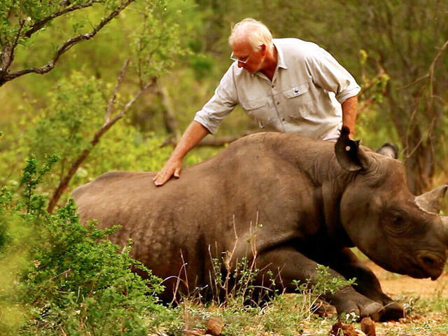

Wildlife plays a crucial role in maintaining the stability of our environment. Forests, which are home to a majority of animal species, provide resources such as food, medicine, and raw materials, and help regulate global temperatures and prevent soil erosion.
Conservation of Wildlife
To protect wildlife and their habitats, it is important to take the following steps:
Control human needs and prevent unnecessary felling of trees
Establish wildlife sanctuaries to protect ecologically significant areas
Implement measures to control pollution and protect migration patterns of birds
Poaching of Wildlife
Poaching, the illegal hunting or capturing of wild animals, is a major threat to wildlife. It is driven by high profit margins and weak enforcement of laws. Some examples of illegal wildlife trade include the poaching of elephants for ivory and tigers for their skins and bones.
Impact of Poaching
Poaching has a significant impact on wildlife populations and can lead to the extinction of certain species. It also undermines efforts made by countries to protect their natural resources and can have wider implications on the balance of nature and the spread of invasive species.
Conservation Efforts
Governments and organizations around the world are working to combat illegal wildlife trade and protect wildlife. The Red Data Book, for example, is a government-maintained document that identifies endangered organisms in each state of India. The Convention on International Trade in Endangered Species of Wild Fauna and Flora (CITES) is an international agreement aimed at regulating and limiting the trade of endangered species.